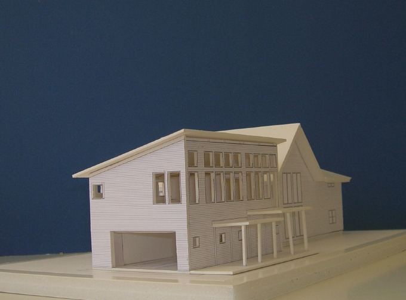

Manchester House
Manchester Center, VT
2005

After reviewing the drawings and images from the Equinox Studio, the clients made a number of suggestions and changes to the program. The result is a more traditional form and a much more carefully-scaled set of spaces.
In the summer of 2006 this project was out to bid with local contractors.